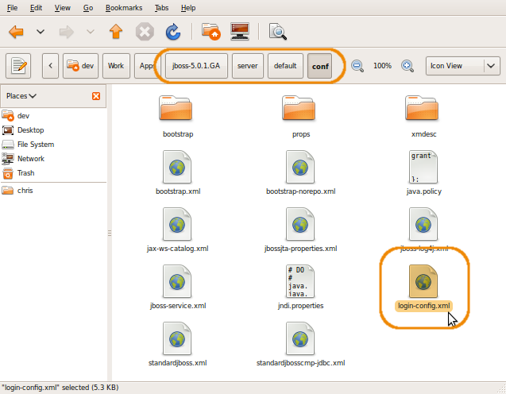
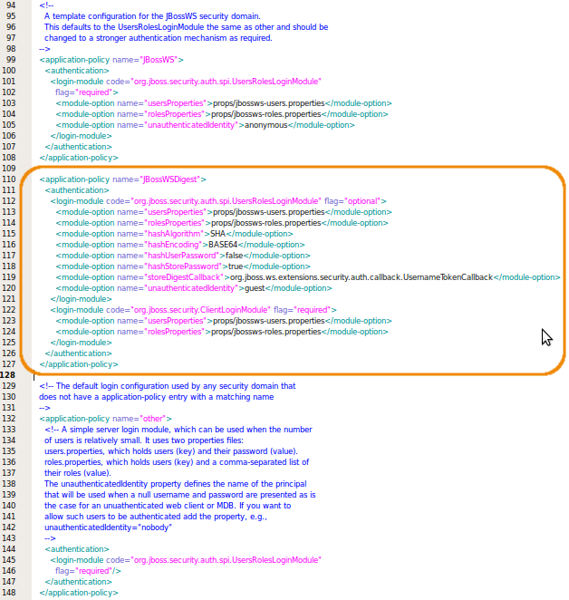
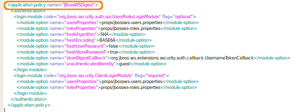
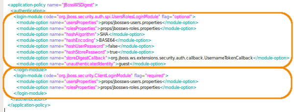
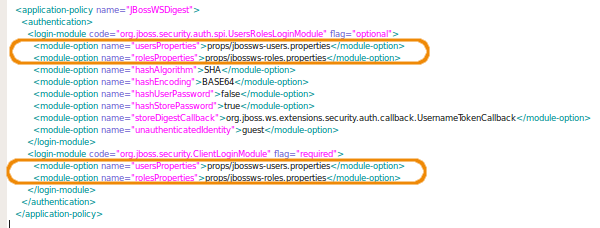
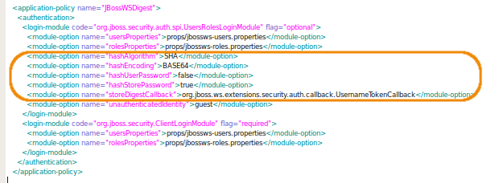

JBoss configuration for the Factory
In order to develop a service for the factory, you need to be able to deploy a factory, and for this, you need first to configure some properties of JBoss for the factory. This page contains the instruction necessary to configure JBoss for such a deployement. It assume that you have already installed a correct development environment, as described in the appropriate documentation. If this is not the case, then you need first to follow the given instruction before proceeding to this page.
JBoss Configuration
For the factory to run correctly, it need some information from JBoss, especially authentication information. Indeed, you need to modify the JAAS configuration file of JBoss, in order to add the specific authentication configuration for the services of the factory. Each service in the factory reference the name of a specific application policy (with a @SecurityDomain annotation). The application policy define how to find the users names and passwords, and how the client can authenticate itself to the service (digest, plain, etc). Thus, by referencing the same name, services can use the same application policy, that is the same users and passwords, and the same authentication methods. In the factory, all core services reference the same application policy, called "JBossWSDigest". You need to define this security domain. This is done by modifying the "login-config.xml" file in the $JBOSS_HOME/server/default/conf folder:
- Open the "login-config.xml" file in the $JBOSS_HOME/server/default/conf folder in your prefered text editor: 
-
Find the <application-policy name="other"> tag, near the end of the file, and before it, add the following code:
<application-policy name="JBossWSDigest"> <authentication> <login-module code="org.jboss.security.auth.spi.UsersRolesLoginModule" flag="optional"> <module-option name="usersProperties">props/jbossws-users.properties</module-option> <module-option name="rolesProperties">props/jbossws-roles.properties</module-option> <module-option name="hashAlgorithm">SHA</module-option> <module-option name="hashEncoding">BASE64</module-option> <module-option name="hashUserPassword">false</module-option> <module-option name="hashStorePassword">true</module-option> <module-option name="storeDigestCallback">org.jboss.ws.extensions.security.auth.callback.UsernameTokenCallback</module-option> <module-option name="unauthenticatedIdentity">guest</module-option> </login-module> <login-module code="org.jboss.security.ClientLoginModule" flag="required"> <module-option name="usersProperties">props/jbossws-users.properties</module-option> <module-option name="rolesProperties">props/jbossws-roles.properties</module-option> </login-module> </authentication> </application-policy>Your file "login-config.xml" should look like this: Some explanation of the configuration:
- The "application-policy" tag define the name of the application policy ("JBossWSDigest" here), and contains the configuration for this application policy. 
- The 2 "login-module" tags define two methods of login: one called "UsersRolesLoginModule", which is used by clients using the webservice interface, and one called "ClientLoginModule", which is used by clients using the RMI interface. 
- The 2 login modules define the path to the files used to get usernames and roles through their "usersProperties" and "rolesProperties" properties 
- Moreover, the "UsersRolesLoginModule" module set its properties so that the client has to use a digest to authenticate (instead of passing the passord in clear). 
Once the application policies are defined, your JBoss is ready for the factory. You can now start to install the Eclipse template to create a factory service.